Fantasy
The Lantern Keeper of Elderfen
Twelve-year-old Wren tends the marsh lantern that holds back the Hollow Mist, until the flame speaks and tells her what the mist really wants.
30 original stories, one chapter each. Search, filter, and choose your next read.
Twelve-year-old Wren tends the marsh lantern that holds back the Hollow Mist, until the flame speaks and tells her what the mist really wants.

Lone communications officer Tala Okonkwo receives a message from a planet that was supposed to be empty. It is written in her own handwriting.

Every rainy Thursday, Ines and Theo share the same bus stop and pretend not to notice each other, until the day only one umbrella survives the storm.

When page 114 vanishes from the town library's only copy of a centuries-old diary, young librarian Pia must find out who needed it gone.

Mika catches the final bus after a late shift. Every stop it makes is a place she has never seen, and the other passengers keep looking at her as if they know her.
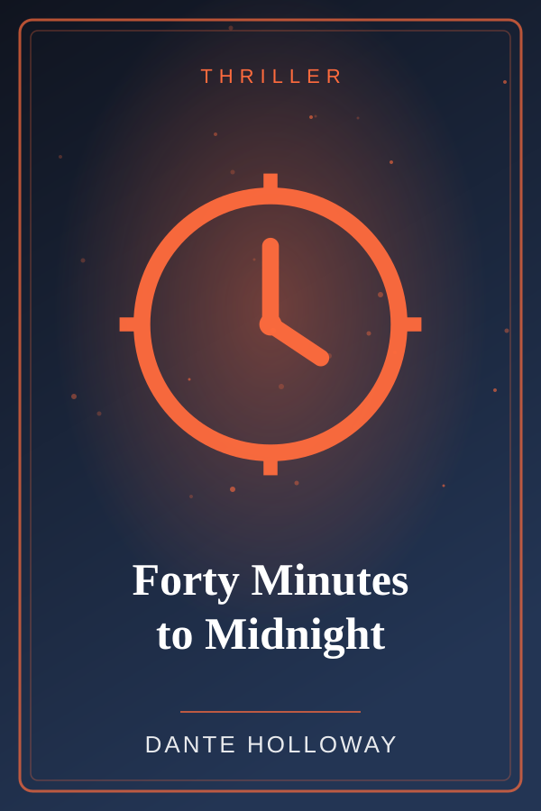
A train engineer receives an anonymous message: a bomb is on board, and the only person who can stop it is the one passenger he has never met.

Siblings Nico and Bea inherit a broken compass that points not north, but toward whatever you miss the most. Their search leads to a drowned lighthouse.
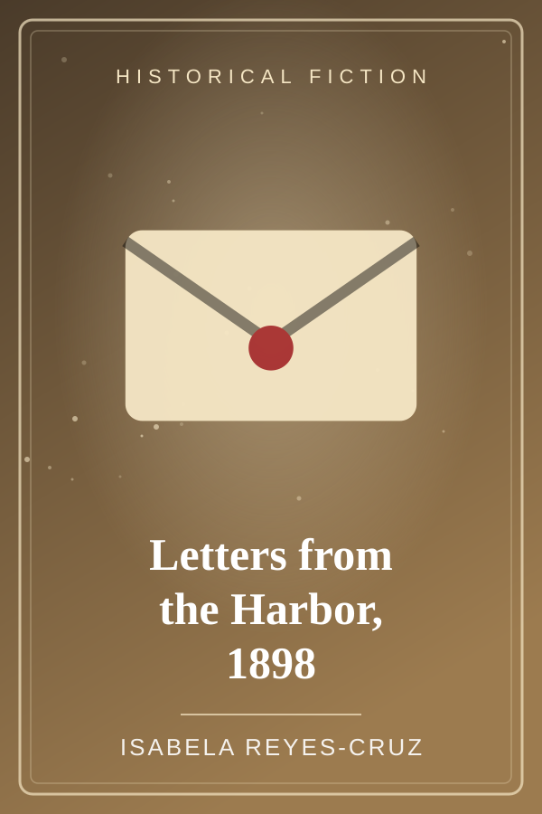
In the turbulent summer of 1898, a young telegraph clerk in Manila secretly copies messages that could save a neighbor's family.
At Tita Nena's birthday party, the old karaoke machine refuses to stop, picks every song itself, and seems determined to expose everyone's secrets.

Three years after their father's passing, the Alvarez siblings gather for a Sunday dinner no one wants to host, and the real conversation begins with the last place setting.

In a city where every spoken word is counted and taxed, a clerk named Odel discovers that his daily ration of one hundred words is no longer enough.

College sophomore Jade finally finds a cheap apartment, only to discover her roommate has been dead since 1974 and has strong opinions about her dishes.

Princess Liora is told that princesses must be quiet and gentle, so she secretly fills jars with thunder, and learns what a roar is for.

In an island myth retold anew, a wind spirit keeps the names of every sailor lost at sea, until a stubborn girl asks her to give one back.

A tired sheriff, a missing water wagon, and one hot afternoon decide whether Redrock Junction survives the summer.

Inventor's apprentice Tilly builds a brass mapmaking automaton, only to find it has been drawing a city that does not exist, yet.

Courier and street hacker Kiro is hired to deliver a memory chip across Sector 7, and the memory on it is her own.
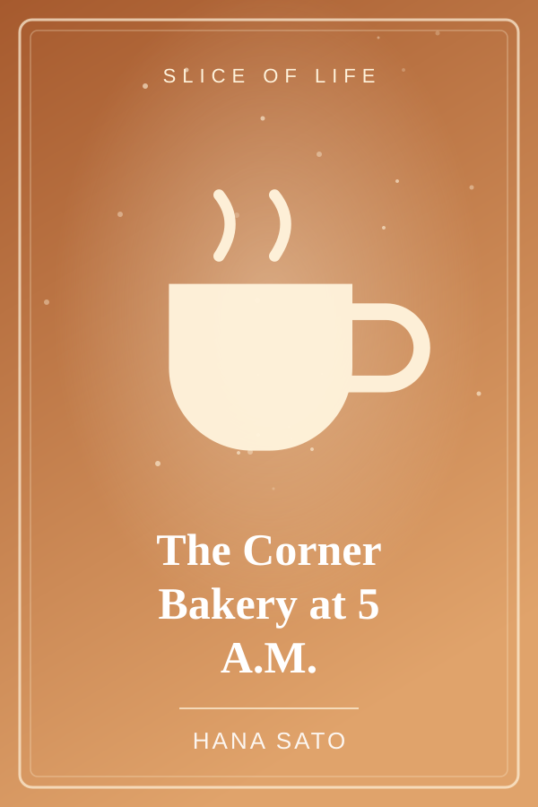
Before the city wakes, a baker, a delivery boy, and a stray cat share the quietest hour of the day over warm bread.
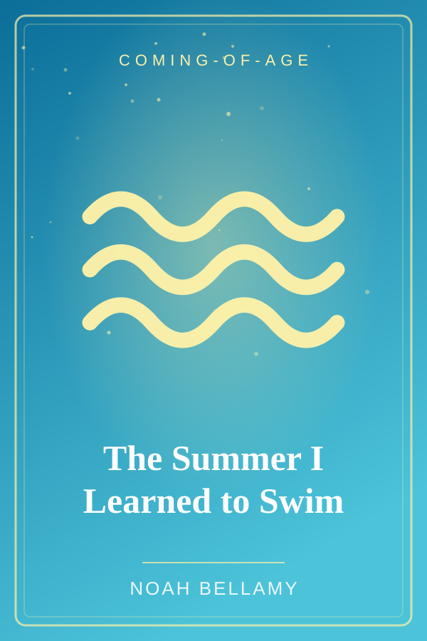
Fifteen-year-old Marco is afraid of deep water, and the lake his cousins love is full of it. One summer, he decides to stop watching from the dock.
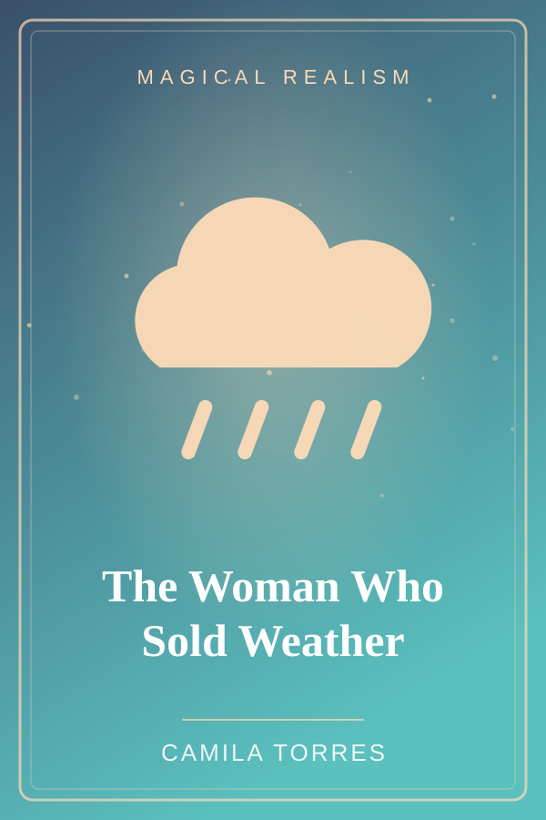
In a dusty plaza, Doña Alma sells jars of weather, a spoonful of drizzle, a pocket of sunshine, but never to anyone who wants to hide from their own feelings.
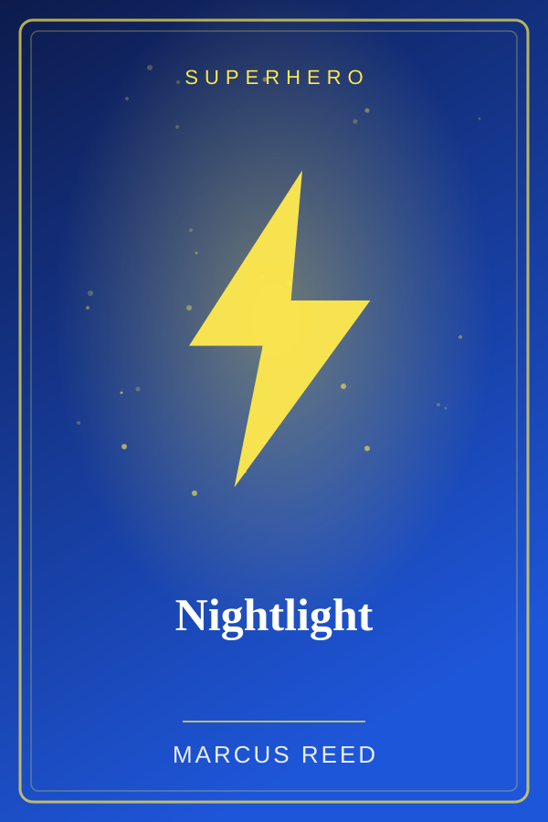
Ten-year-old Dev is scared of the dark, so naturally he gains the power to glow, and the city's blackout needs him badly.

Thirteen years after the Collapse, a scavenger named Ysa finds a single sealed packet of seeds and has to decide whether to sell it or plant it.
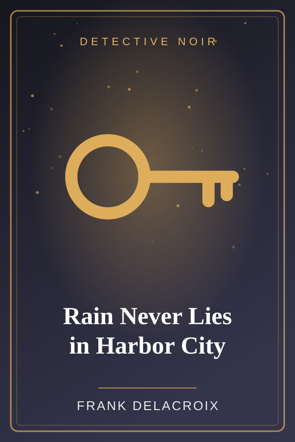
Private eye Sam Quill takes one last case from a client who pays in damp cash and a name he has not heard in ten years.

When Isa inherits her grandmother's orchard, she finds a door standing alone between two apple trees, and it opens a little wider each night.
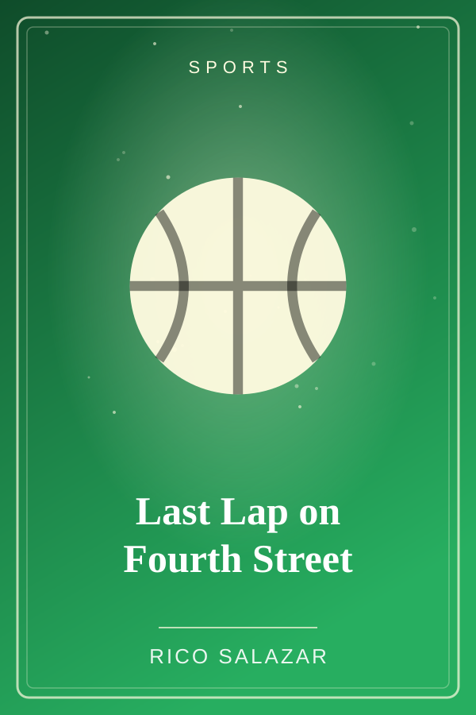
Cross-country runner Bea has one chance left to beat her rival, and a sprained ankle that says otherwise.

Master burglar Lou Pereira only steals from people who deserve it, and tonight's target has a safe full of someone else's secrets.
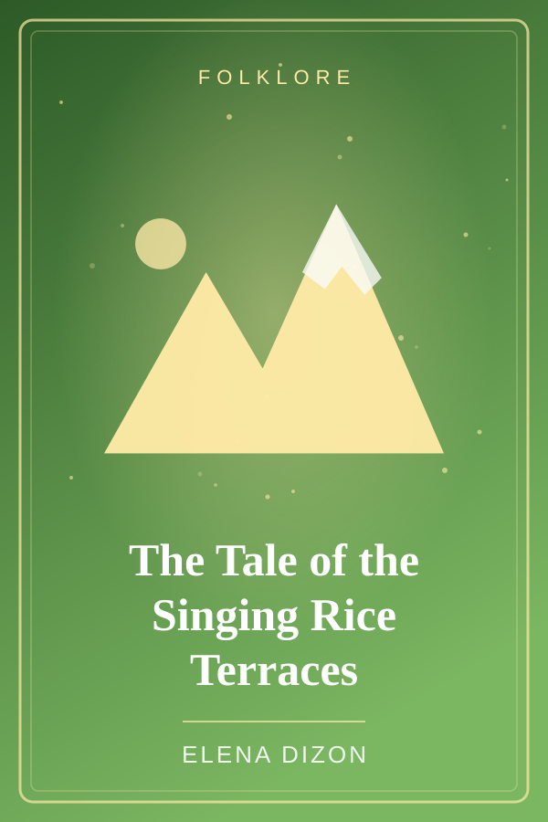
Mountain villagers say the rice terraces sing at harvest, but only to those who work them with honest hands. One greedy lord wants to hear the song for free.
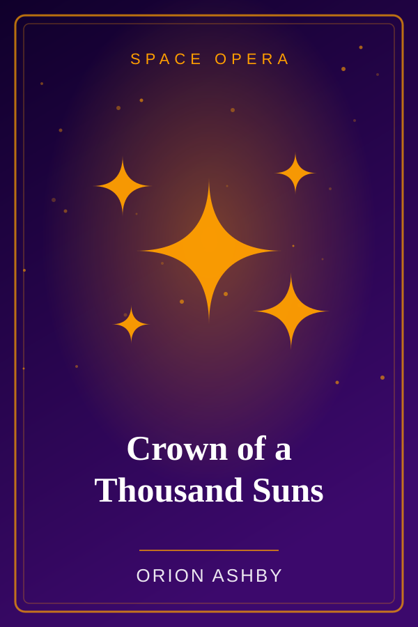
A teenage deckhand on a smuggler's freighter discovers she is the last heir to the Solar Throne, and the empire's fleets are already hunting her.

Governess Adelaide arrives at Ravenmoor Hall to teach two silent children, and finds the lady of the house still walks the halls, a year after her funeral.
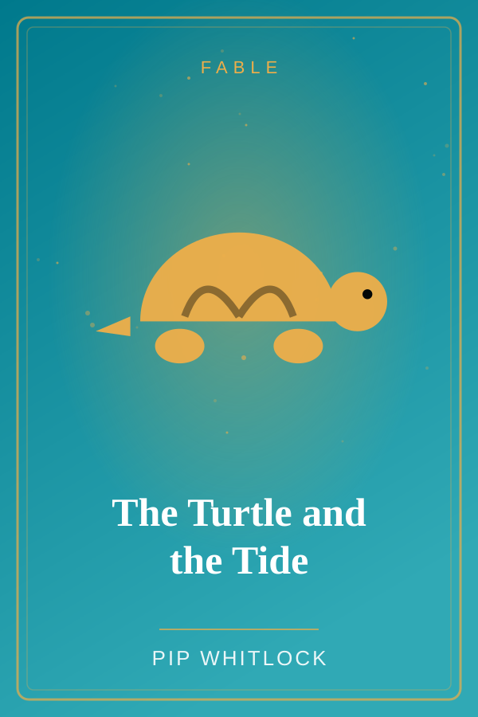
A small turtle is mocked for being slow until a great storm shows the beach what patience can do.
No stories match your search. Try a different word or genre.